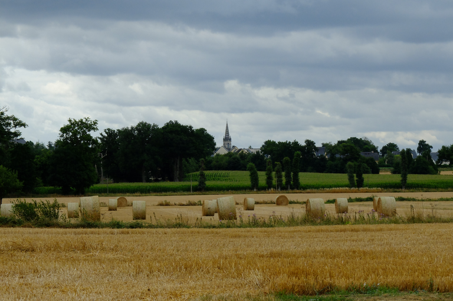

KARTENN STORY
A la (re)découverte du bourg de Mordelles

Cette balade urbaine dans le centre-ville de Mordelles propose de (re)découvrir la richesse patrimoniale de cette commune située à l'ouest de la métropole rennaise. À travers ce parcours, c''est l'occasion d'appréhender la formation et l'évolution de la ville à travers son histoire, et donner à voir la diversité de son patrimoine aujourd'hui.
Source : Anaïs Tissier, Lynda Hamrani et Julien Huon